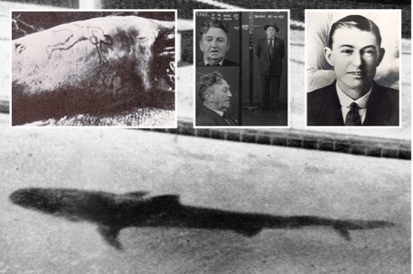

The Shark Arm Case
Refers to a series of incidents that began in Sydney, Australia, on the 25th of April 1935, when a human arm was regurgitated by a captive 3.5-metre tiger shark, resulting subsequently in a murder investigation and trial.
During mid-April, a tiger shark was caught 3km from Coogee Beach and transferred to the Coogee Aquarium Baths, where it was displayed publicly. Within a week, it became ill and vomited in front of a small crowd, leaving the left hand and forearm of a man bearing a distinctive tattoo floating in the pool.
Before it was captured, the tiger shark had devoured a smaller shark. It was this smaller shark that had originally swallowed the human arm. Fingerprints of the hand identified the arm as that of former boxer and petty criminal James “Jim” Smith, who had been missing since the 7th of April 1935. Examination revealed that the limb had been severed with a knife, which resulted in a murder investigation.
Three days later, the aquarium owners killed the shark and gutted it, hampering the initial investigation. Early inquiries correctly implicated a Sydney businessman named Reginald William Lloyd Holmes, who was a fraudster and smuggler who also managed a successful family boat-building business at Lavender Bay. Police were later able to establish that Smith had been blackmailing Holmes.
Smith was last seen drinking and playing cards with Patrick Francis Brady at the Cecil Hotel in the southern Sydney suburb of Cronulla on the 7th of April 1935 after telling his wife he was going fishing. The rest of Smith’s body was never found, causing problems for the prosecution when Brady was eventually brought to trial. Thus, leaving the case unsolved due to lack of sufficient evidence.